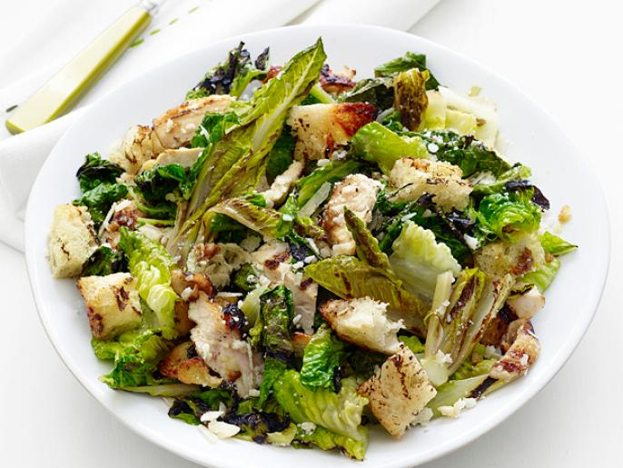

Grilled Chicken Caesar Salad

Description
Easy level, 30 min recipe yields 4 servings.
Ingredients
- 3 cloves garlic
- 1/2 cup extra-virgin olive oil, plus more for brushing
- 2-4 anchovy fillets, chopped
- 1 lemon, juice
- Kosher salt and freshly ground pepper
- 1 lb skin-on, boneless chicken breasts
- 4 (1/2-inch-thick) slices focaccia or whole-wheat Italian bread
- 4 romaine lettucs hearts, halved lengthwise
- 3/4 cup freshly grated parmesan cheese, plus more for garnish
Steps
- Preheat a grill or grill pan to medium high.
- Make the dressing: Chop 2 garlic cloves and puree with 1/2 cup olive oil, the anchovies and lemon juice in a blender until smooth; season with salt and pepper.
- Pound the chicken with a mallet or heavy skillet until about 1/8 inch thick.
- Season with salt and pepper and toss with 1 tablespoon of the Caesar dressing.
- Grill the chicken until golden and crisp, 3 to 4 minutes per side.
- Brush the bread with olive oil on both sides and grill, turning, until toasted, about 2 minutes. Rub with the remaining garlic clove.
- Brush the romaine with 1 to 2 tablespoons of the dressing and grill until marked, 1 to 2 minutes per side.
- Chop the lettuce and transfer to a bowl.
- Cut the bread and chicken into bite-size pieces and add to the bowl. Toss with the remaining dressing, the parmesan, and pepper to taste.
- Garnish with more parmesan.